This example illustrates oomph-lib's adaptive timestepping capabilities. We consider, yet again, the 2D unsteady heat equation
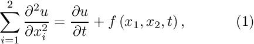 in the square domain![$ D = \{x_i \in [0,1]; i=1,2 \} $](form_1.png) , subject to the Dirichlet boundary conditions , subject to the Dirichlet boundary conditions 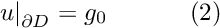 and initial conditions
|
![\[ u(x_1,x_2,t=0)=h_0(x_1,x_2), \ \ \ \ \ \ \ \ \ \ (3) \]](form_3.png)
Here we choose the forcing function and the boundary and initial conditions so that
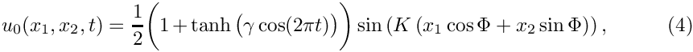
is the exact solution. The solution represents a 1D sin profile with wavenumber  , rotated against the
, rotated against the  -axis by an angle
-axis by an angle  , and modulated by a time-periodically varying amplitude. The parameter
, and modulated by a time-periodically varying amplitude. The parameter  controls the rate at which the amplitude changes. For large
controls the rate at which the amplitude changes. For large
values of , the amplitude remains constant for most of the period but changes rapidly at 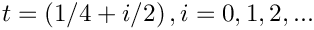. To resolve these rapid changes accurately, very small timesteps are required. Conversely, relatively large timesteps could be employed during the phases when the solution remains approximately constant. The problem therefore presents an ideal test case for an adaptive timestepping scheme.
The figure below shows a snapshot from the animation of the exact and computed solutions, obtained from a simulation with oomph-lib's adaptive BDF<2> timestepper. Since the time interval between subsequent frames in this animation varies, each frame shows a blue line (in the top left corner) whose length is proportional to the elapsed time. The different rate at which the length of the line increases reflects the fact that smaller timesteps are taken when the solution varies rapidly.
The figure below shows the time trace of the solution and documents the timesteps chosen by the adaptive timestepping scheme. Note how smaller timesteps are chosen when the solution undergoes rapid changes.

Most of the driver code for this example is identical to that discussed in the previous example, therefore we only discuss the modifications required to enable temporal adaptivity:
- We pass a boolean flag to the constructor of the
BDF<2>timestepper. - We define a global error norm for the adaptive timestepper by overloading the (empty) virtual function
Problem::global_temporal_error_norm(). - We replace the call to
Problem::unsteady_newton_solve(...)by a call toProblem::adaptive_unsteady_newton_solve(...)and specify a target for the temporal error norm.
Global parameters and functions
We store the problem parameters and define the source function and the exact solution in the usual namespace.
The driver code
Temporal adaptivity only requires a few straightforward changes to the time-stepping loop. Since the number of timesteps required to reach the end of the simulation is not known a priori, we replace the for - loop over the fixed number of timesteps, employed in the non-adaptive version of the code, by a while - loop that continues the time-integration until  .
.
The adaptive timestepper, Problem::adaptive_unsteady_newton_solve(...) takes two arguments. The first one is a suggestion for the size of the next timestep; the second specifies the target error The adaptive timestepper automatically adjusts the timestep until the error estimate computed by Problem::global_temporal_error_norm() is less than that target. If the error estimate for the solution computed with the suggested value of dt is too large, dt is reduced by a factor of 2 and the solution is recomputed. This process is repeated until
- the estimated error has become sufficiently small
or
dthas been reduced below a threshold.
The threshold is stored in the private member data Problem::Minimum_dt and is initialised to  . This default can be changed with the access function
. This default can be changed with the access function Problem::minimum_dt(). It is also possible to specify a maximum value for the timestep by overwriting the default value 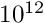 for the corresponding data member, Problem::Maximum_dt, using the function Problem::maximum_dt().
The adaptive unsteady Newton solver returns a suggestion for the size of the next timestep.
Here is the relevant code fragment from the otherwise unchanged main function:
The rest of the main function is identical to that in the previous, non-adaptive example.
The problem class
The problem class contains a single additional member function
which we will discuss below.
The problem constructor
The problem constructor is almost identical to that in the previous example. The only difference is that the boolean flag true is passed to the constructor of the BDF<2> timestepper, which means that a predictor step is computed for each timestep, see background for more details.
The problem destructor
The problem destructor is identical to that in the previous example.
Actions before timestep
This function is identical to that in the previous example.
Set initial condition
This function is identical to that in the previous example.
Post-processing
The Problem member function doc_solution(...) is virtually identical to that in the previous example. We merely add the timestep dt to the trace file.
Dumping the solution
This function is identical to that in the previous example, indicating that the generic Problem::dump() function can deal with time-dependent simulations.
Reading a solution from disk
This function is identical to that in the previous example, indicating that the generic Problem::read() function can deal with time-dependent simulations.
Defining the global error norm for the adaptive timestepper
Background
oomph-lib's adaptive timesteppers employ a predictor-corrector scheme to control the size of the timestep. In these schemes a low-order explicit timestepper is used to predict the solution at the next timestep. This prediction is compared to the solution computed with the actual (usually implicit) timestepper itself. The difference between the two predictions is then used to derive an estimate of the error (exploiting the different truncation errors of the two timestepping schemes).
Interfaces to the functions that compute the temporal error estimates are defined as broken virtual function in the TimeStepper base class. Specific TimeSteppers that allow adaptive timestepping
therefore overload the broken virtual function
which computes an estimate of the error of i - th value stored in the Data object pointed to by data_pt. In free-boundary problems in which the position of the nodes is an unknown, the corresponding function
may be used to obtain an estimate of the error in the i - th nodal coordinate of the Node pointed to by node_pt.
These individual error estimates must be combined into a problem-specific, scalar error norm, 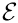 say, which forms the basis of the adaptive adjustment of the timestep in Problem::adaptive_unsteady_newton_solve(...).
Implementation
In the present problem, we choose the RMS of the errors 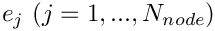 at the nodes as the global error norm
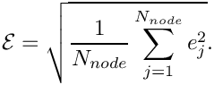
This may be implemented in a few lines of code:
Comments and Exercises
As demonstrated above, enabling temporal adaptivity for a given problem is extremely straightforward as it only requires the implementation of the problem-specific function Problem::global_temporal_error_norm(). In most cases, the RMS of the nodal errors (or some suitable generalisation for vector-valued problems) is an obvious choice. In free-boundary problems, the RMS of the error estimate for the nodal positions is often a useful error measure.
How to choose the target for the temporal error norm
Having decided on an error norm, how does one choose the target for the error norm? The answer is the same as in a simulation with a fixed timestep: Trial and error, followed by careful convergence tests. We usually employ the following strategy:
- Implement the function
Problem::global_temporal_error_norm()and perform an initial computation with a fixed timestep, choosing its size heuristically, exploiting prior knowledge that we (usually!) have about our problem. For instance, if we expect a periodic solution with an approximate period , we may start with a fixed timestep 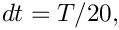 say. The computed results are likely to be very inaccurate but the time-trace will usually reveal the characteristic features of the solution and thus identify phases during which the solution varies rapidly.
, we may start with a fixed timestep 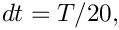 say. The computed results are likely to be very inaccurate but the time-trace will usually reveal the characteristic features of the solution and thus identify phases during which the solution varies rapidly.
- Now repeat the simulation with a smaller time-step, 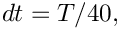 say, and check if any new features develop in the time-trace. If the time-trace appears to be robust, monitor the temporal error norm, e.g. by including the output of
Problem::global_temporal_error_norm()into the trace file. - Use the maximum of the temporal error norm observed during the simulation with the fixed timestep as the target in a first simulation with temporal adaptivity. The timestepper should now increase the size of the timestep in regions where the error estimate was small.
- Now repeat the simulation with smaller and smaller target errors until further reductions do not lead to further changes in the computed results.
Exercise:
Employ the above procedure to determine the target error 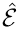 required for the computed solution to be graphically indistinguishable from that obtained with a target error of  .
.
Restarting from a simulation with temporal adaptivity
We mentioned above that the data recorded/read by the generic Problem::dump(...) and Problem::read(...) functions is sufficient to restart a temporally adaptive simulations as the functions record the history values and the history of previous timesteps. Here is an illustration of a simulation that was started from the restart file produced at 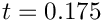 in the original run. The solution computed in the restarted run follows that obtained in the original simulation but it does not employ exactly the same timesteps.

Exercise:
Explain why the restarted simulation uses slightly different timesteps and modify the dump_it(...) and restart(...) functions to solve this problem. [Hints: (i) Recall that the adaptive timestepper returns a suggestion for the next timestep. This is not recorded in the restart data! (ii) If you can't solve the problem, have a look at the discussion of oomph-lib's doubly-adaptive unsteady Newton solver where an improved dump/restart procedure is implemented.]
Source files for this tutorial
- The source files for this tutorial are located in the directory:
demo_drivers/unsteady_heat/two_d_unsteady_heat_t_adapt/ - The driver code is:
demo_drivers/unsteady_heat/two_d_unsteady_heat_t_adapt/two_d_unsteady_heat_t_adapt.cc
PDF file
A pdf version of this document is available.